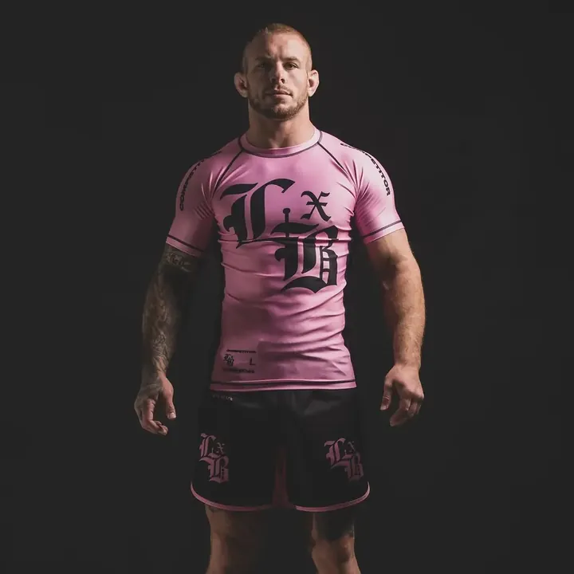

Wrestling for jiu jitsu
Collar ties, hand fighting, single legs, and body locks feature throughout his wrestling series. The emphasis is on connecting standing exchanges to takedowns and useful positions for grappling.
The coach behind Precision
Black belt. Competitor.
BJJ Fanatics instructor.
Head instructor and co founder of Precision Jiu Jitsu in Hudson, New Hampshire. Bringing professional competition experience and a published library of techniques to the people on our mats.

His background
Shawn first encountered jiu jitsu through older cousins who shared techniques at family gatherings. He began training full time in mixed martial arts in 2011, building a 3 win, 1 loss record before shifting his focus to jiu jitsu in 2014.
That path led to superfights, tournament competition, and the coaching work that now anchors Precision. Today, Shawn leads the Hudson academy alongside fellow black belt Alex West, helping beginners find their footing and experienced grapplers keep developing their game.
His BJJ Fanatics instructionals take that work beyond the gym. Across wrestling, guard passing, top control, and submissions, his published material explains the positions and connections that make up a complete no gi game.
Inside the technique
Shawn's published curriculum gives a clear picture of his technical focus, from the first grip to the finishing position.
Collar ties, hand fighting, single legs, and body locks feature throughout his wrestling series. The emphasis is on connecting standing exchanges to takedowns and useful positions for grappling.
His top game material covers movement between side control and mount, keeping control through transitions, and finding submissions as opponents react. Small changes in weight and positioning are central to the approach.
His armbar and guard instructionals explore entries, sweeps, and follow ups from several positions. Rather than treating each finish in isolation, the curriculum follows how one opportunity leads to another.
Professional competition
Shawn competed for the Philadelphia Phenoms in the Professional Grappling Federation's 2026 Season 9 and reached the eight athlete playoff field.
The league's official match history records finishes with arm attacks, a kneebar, an ankle lock, and an arm triangle. These selected results offer a look at that range.
View Shawn's official PGF record ↗Selected Season 9 submission wins
Results from the Professional Grappling Federation. See the official record for the full match history.
Learn beyond the gym
Study a position in depth, revisit the details, and bring new questions back to the mats. Explore selected titles from Shawn's published catalog.
Submissions
Armbar entries and transitions from mount, side control, guard, and standing. The series also looks at maintaining control and responding when an opponent starts to escape.
5.0 / 5 · 83 reviews ↗Watch preview & explore course →Full course on BJJ Fanatics ↗Takedowns & standing exchanges
A wrestling curriculum built for grappling. Topics include tie ups, single legs, throws, rear body locks, and counters that help connect the standing game to the rest of your jiu jitsu.
Watch preview & explore course →Full course on BJJ Fanatics ↗Guard passing
Build options from the headquarters position with knee cuts, body locks, leg drags, and reaction based passing. Live rounds and breakdowns show the techniques in context.
Watch preview & explore course →Full course on BJJ Fanatics ↗Top control
Side control, mount, and submission connections built around pressure and positioning. This series explores the top game behind Shawn's widely shared “Air Jail” clips.
Watch preview & explore course →Full course on BJJ Fanatics ↗The displayed rating belongs to Arm Bar It All on BJJ Fanatics. Rating and Instagram audience checked November 15, 2026.

Beyond the academy
Shawn shares technique with an Instagram audience of more than 276,000 followers. His profile connects students with his instructionals and offers a way to enquire about seminars.
For a longer look at his approach, his July 2025 conversation with the Forever White Belt podcast covers wrestling's influence on his jiu jitsu, coaching, competition preparation, and training culture.
Train with us in Hudson
New to jiu jitsu or already training? Tell us where you're starting. We'll help you find a class and arrange your first visit to Precision.
14 Brady Drive, Unit 2Yes. Precision welcomes all experience levels. Contact the gym before coming in so a coach can help you choose a suitable first class.
Use our free class request form or call (603) 459 3610. A coach will confirm the class and answer your questions before you arrive.
Visit the instructional library to compare all seven courses and watch public previews. Full course access is handled by BJJ Fanatics.